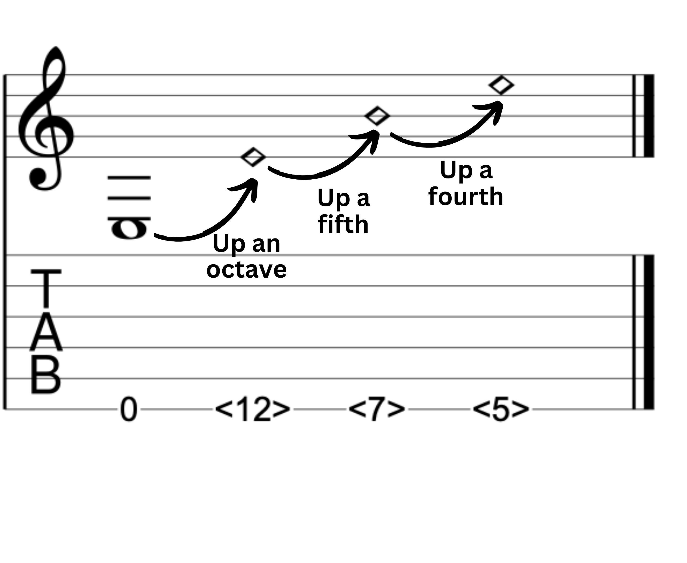
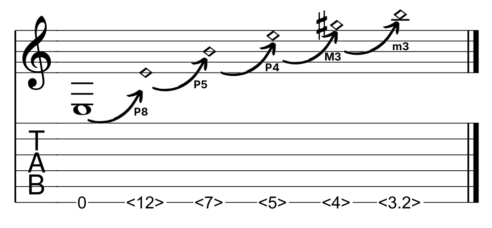
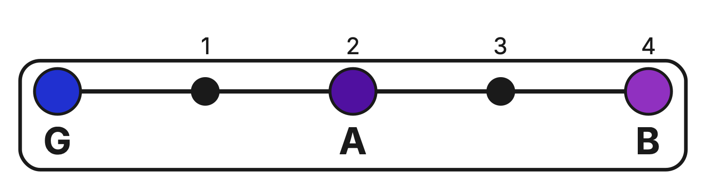
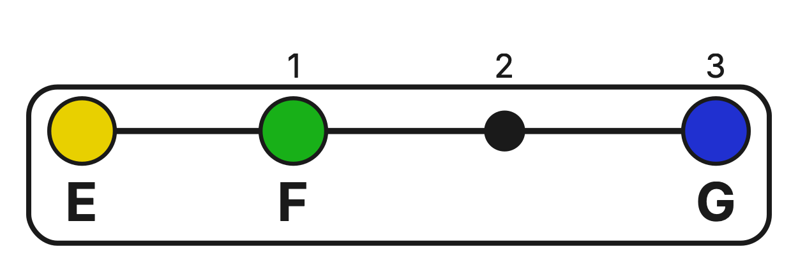
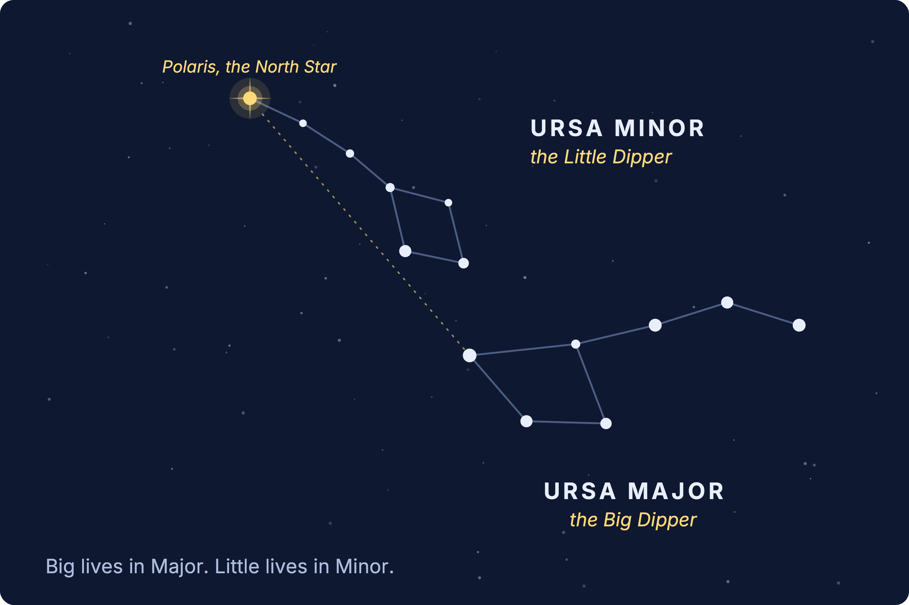
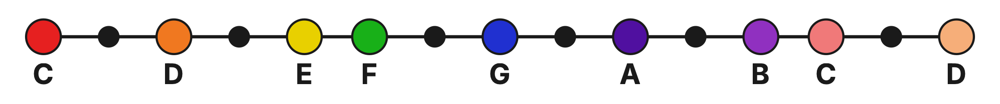

Level 2 · Chapter 1
Major and Minor Intervals: The Imperfect Interval Family
Welcome to Level 2.
In Level 1 harmony, we started with the Perfect intervals. Remember where they came from? The Harmonic (Overtone) Series. The very first intervals nature stacks above a note are the Perfect octave, then the Perfect 5th, then the Perfect 4th.

Because they come straight out of that natural series, they sound especially pure and stable, and that stability is what earned them the name “Perfect.” We used them to build Power Chords (a root note and a note a Perfect 5th above).
Further up the Harmonic Series, the Major 3rd (M3) and Minor 3rd (m3) intervals appear.

A new family of intervals
The 3rd intervals belongs to a new type of interval family called the Imperfect intervals. 2nds, 3rds, 6ths, and 7ths are all imperfect intervals, while the Unisons, 4ths, 5ths, and 8ths (octaves) are the Perfect intervals we discussed in Level 1.
| Perfect | Imperfect |
|---|---|
| Unison | |
| 2nds | |
| 3rds | |
| 4ths | |
| 5ths | |
| 6ths | |
| 7ths | |
| Octave |
Imperfect intervals come in two everyday sizes: a bigger one we call Major and a smaller one we call Minor.
The Major 3rd vs. minor 3rd
An interval has two attributes: its quantity (the number of note names it spans) and its quality (the number of half steps you traverse). Both the Major 3rd and the minor 3rd span 3 note names. That is what makes them both a “3rd.”
However, the Major 3rd is the bigger of the two.
Look at the G–B interval. It spans 3 note names: G (1), A (2), B (3). And you traverse 4 half steps: G, G♯ (1), A (2), A♯ (3), B (4). You can verify this on the guitar: on the G string, the 4th fret is the note B.

Now, let's Look at the E–G interval. It spans 3 note names: E (1), F (2), G (3) and is therefore a 3rd. But you only need to traverse 3 half steps: E, F (1), F♯ (2), G (3).

Therefore, the minor 3rd is the smaller of the two 3rd intervals because you only need to traverse 3 half steps. Whereas in a Major 3rd interval, you must traverse 1 more half step (a total of 4).
An easy way to remember it: Major = Big, Minor = Little
Major is always the bigger interval, and Minor is always the smaller one. Major = Big. Minor = Little.
If that ever slips your mind, think of the Dipper constellations. The Big Dipper sits inside the constellation Ursa Major, and the Little Dipper sits inside Ursa Minor. Big lives in Major, little lives in Minor.

Try it yourself
For each pair of notes below, count the half steps traversed from the lower note to the upper note. Then name the interval: is it a Major 3rd or a minor 3rd?

- C to E
- A to C
- F to A
- D to F
- B to D
Answer key
- C to E: 4 half steps, a Major 3rd
- A to C: 3 half steps, a minor 3rd
- F to A: 4 half steps, a Major 3rd
- D to F: 3 half steps, a minor 3rd
- B to D: 3 half steps, a minor 3rd